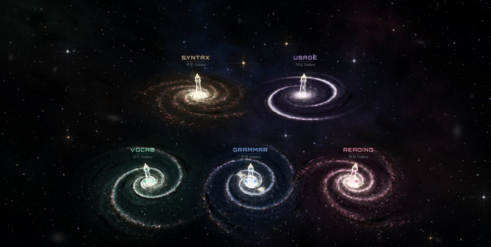

ORUN STUDIO
MODULES
UNIVERSE
ORUN ENGLISH
LIVE
-- FPS
옳은영어 · ORUN ENGLISH
ORUN
STUDIO
가르치는 모든 것을 한 자리에.
여덟 개의 모듈
이 대기 중입니다.
UNIVERSE 진입
모듈 선택
08
MODULES
33
교재
1,379
단원
678
시험지
05
GALAXY
MODULE
SELECT
수업이 도는 여덟 개의 도구입니다. 타일을 누르면 바로 그 도구로 들어갑니다.
08 AVAILABLE

CURRICULUM MAP
ORUN
UNIVERSE
다섯 Galaxy가 한 하늘에 떠 있습니다. 등대를 누르면 그 커리큘럼으로 들어가 단원을 고르고 시험지를 발행합니다.
ENTER
VOCAB
GRAMMAR
SYNTAX
USAGE
READING